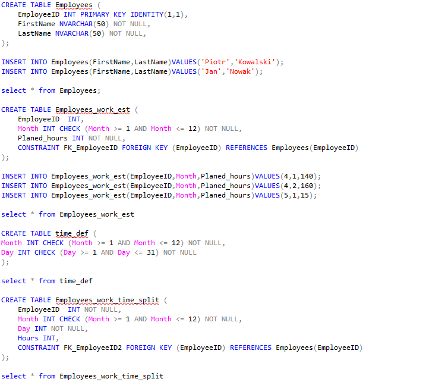
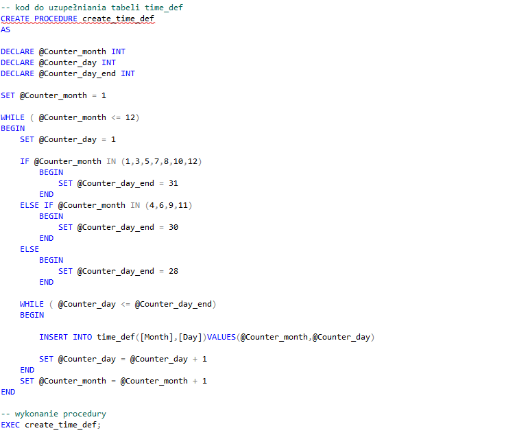
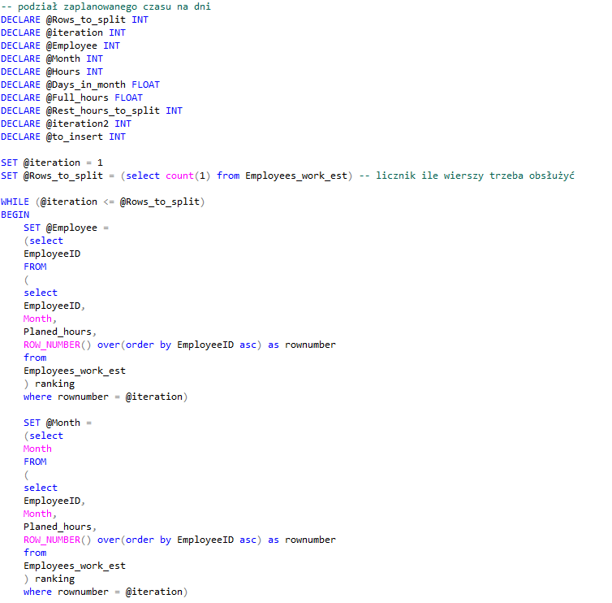
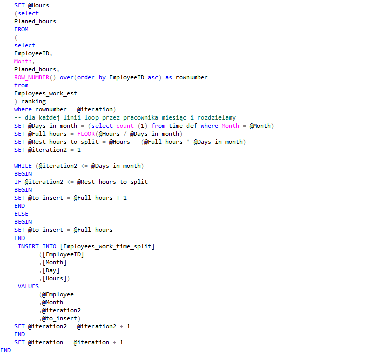
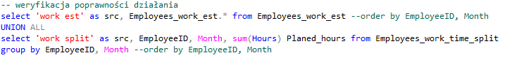
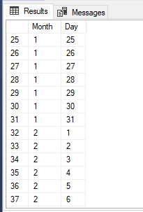
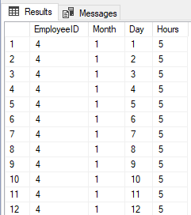
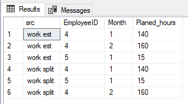

Opis techniczny





X
Celem projektu jest utworzenie struktur bazodanowych, uzupełnienie ich oraz stworzenie mechanizmów w T-SQL, które uzupełnią tabele.
Tabela time_def ma zawierać kolumny z miesiącem i dniem. Blok SQL iteruje i insertuje do tabeli dane wg logiki dla każdego miesiąca od 1 do 12 sprawdza ile dany miesiąc ma dni i wewnątrz danego miesiąca iteruje tyle razy, aby odwzorować układ znany z kalendarza.

Tabela Employees_work_time_split ma zawierać kolumny z id pracownika, miesiącem, dniem oraz rozdzieloną liczbą godzin do przepracowania. Na podstawie tabeli z planowaną liczbą godzin kod rozdziela godziny na poszczególne dni. W efekcie uzyskujemy następującą tabelę:

Aby sprawdzić poprawność można porównać zaplanowane godziny z rozdzielonymi, jeżeli są takie same to kod działa poprawnie:
